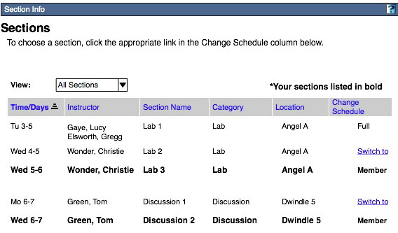

Section Info Tool: Project Statement, Functional Requirements and Specification
(DRAFT -- SUBJECT TO EXTENSIVE REVISION. )
Definitions| Scope statement| Out of scope| Dependencies| Roles| Functional Requirements |Specification with Wireframes
I. Definitions
Because a section management tool is related to a wide range of administrative functionality and reliant on multiple framework services, there is significant room for misinterpretation and misunderstanding of key concepts. To help reduce potential confusion, the following terms and definitions should be kept in mind while reading this document:Courses
- Course -- An instance of a canonical course, e.g., Math 16B Fall 2005 and the associated roster of students, instructors and section leaders. Class might be a more precise and distinctive term, but course seems to have wider usage in this context. Course is also preferred to the more general "worksite" here, although they should be considered equivalent to each other for purposes of this document.
- Section -- A subset of students in a class that usually meet under the guidance of a section leader. Section metadata and memberships may be aligned with or may be defined by enterprise data from an outside system. In many cases all students in a course must belong to one or more types of sections (but are not allowed to be in more than one section of any type). There are roughly 4 types of section scenarios:
- Externally defined, externally controlled formal sections -- Section metadata and memberships are defined and maintained in enterprise systems outside of Sakai.
- Externally initialized, internally manged and negotiated formal sections -- Section metadata and memberships are defined wholly or in part in enterprise systems outside of Sakai, but can be managed and modified inside of Sakai [This type will not be supported in 2.1]
- Internally defined, internally controlled formal sections -- Section metadata and memberships are defined and managed in Sakai, but are usually aligned in some respects with "official" sections, e.g., the meeting location.
- Internally defined, internally controlled informal sections -- An ad hoc group or subset of students in a course. This group may have one of a variety of functions: study groups, project team, etc. The group may or may not have a section leader. [This type will not be directly supported in the sectioning tool. However, the boundary between a formal and informal Internally defined, internally controlled section is largely related to workflow. In other words, the ability to create formal sections should allow many instructors to meet their needs for ad hoc groups.]
Framework and Services
- Section awareness -- Essentially, the ability to restrict or expand selectively what the members of a section, in terms of their roles, can do within the context of a course site. Role permissions vis a vis sections might be defined at the system level.
- Hierarchy -- A term that came to cover, in Sakai parlance, what has subsequently been broken out into the services that support, among other things, section management and awareness, and, by extension, came to represent sectioning itself.
- SuperStructure --
The new Sakai common services that support site hierarchies, context, and authorization across the framework.
- AuthZ -- Controls who can do what where. For example, Sarah is the Section Leader for sections 1 and 3. Sarah can view and grade only the students in her sections. Superstructure, by also providing the who and where, helps enable these controls.
- CourseManagementProvider -- The standard Sakai interface for consuming enterprise course data. The current provider does not support course hierarchies, that is, it has no notion of Sections.
- Course Management API -- Provides the course data -- name, course id, course roster, section names, section leaders, students in a section etc. -- to the various Sakai tools that use that information. This information can be entered into the system manually or it can be transferred into the system from other enterprise applications through customized solutions, e.g., Web Services. The current CourseManagementProvider does not support section data. How Course Management works with AuthZ and Superstructure is an open question.
II. Scope statement
The primary deliverable for this subproject is a a new Sakai administrative tool that allows authorized users to create course sections/groups and/or manage section/group metadata and memberships. The tool will be available to authorized users for each course site from the standard toolbar. Tool design, development, integration and final QA will be completed by 10/29/05.
III. Out of scope
The sectioning tool represents a fundamental shift in Sakai's administrative capabilities. The introduction of sectioning into the overall Sakai administrative workflow is a major change to the application that should entail a review and redesign of the administrative tools in My Workspace and Admin Workspace in addition to any changes made at the course site level within Site Info. Instead, the twin constraints of time and resources demand that the subproject keep the outside impact of the new tool to a minimum.
- Any required changes to administrative areas outside of the existing functionality within the Site Info area that is subsumed by the new sectioning tool are out of scope. Resources outside of the subproject team must be allocated to fully identify any impacts and to do the contingent design and development work. See dependencies.
- The incorporation of "section awareness" in other Sakai Tools is out of scope. Resources outside of the subproject must be allocated to do any design and development. See dependencies.
IV. Dependencies
1. In order to complete the sectioning tool by the October delivery date, the following framework services should be implemented, integrated and tested at a point early enough for the developers to build the tool on those services. Schedule TBD. This work must be closely coordinated with the subproject's technical lead.
- Superstructure. This is finished and implemented, but unintegrated and untested. This is required to establish the hierarchy among courses and sections.
- AuthZ. This is finished and implemented, but unintegrated and untested. There also seems to be some disagreement on the architecture team about the adequacy of the design of the service.
- Course management. Finished, but only partially implemented. Is not using Hibernate.
2. There must be at least one tool that uses the sectioning tool's management capabilities or there will be no relevant context for the sectioning. The section aware tool(s) will be
- Tests and Quizzes
- Gradebook
- Announcements
UI elements and other code developed for the sectioning tool should be re-usable for other section aware tools.
3. There must be a new OOTB generic Sakai role that parallels Maintain and Access, but which is scoped at the section level. Without it, OOTB pieces of Sectioning Tool functionality will be rendered superfluous. Put another way, without this new generic role, anyone who deploys Sakai would first have to create a role for managing sections before using the Sectioning Tool OOTB in a fully meaningful way. Please see Section V below.
4. Any other required changes to My Workspace and Admin workspace. TBD.
V. Roles
Three roles will be supported :
- Instructor -- Usually a professor, lecturer or teaching assistant who is a member of a course and who has fulll administrative control of the course site and sections/groups. S/he has access to all sections/groups.
- Teaching Assistant (TA) -- A graduate student instructor or faculty member with limited administrative access to and control of sections within the section aware tools. Within the Section Info itself, the TAs will be able to:
- View section metadata for all sections
- View and manage student memberships in all sections
- Student -- A member of a course and possibly of a section(s) and/or group, but not in an administrative or instructional capacity for sections. Within the Sectioning Tool itself, the Students will be able to:
- View section metadata for all sections
- Depending on Instructor preferences, join and switch sections
VI. Functional Requirements
Without Enterprise Section Data/Manual Section Creation
A. Instructor Requirements. The numbered sections correspond to Instructor views in the Section Info Tool.
- Overview
- View and sort on a list of per-section specific info (days, time, assigned TA, room, current enrollment, available slots, max enrollment, section category).
- Open views to edit section properties, assign TAs and assign students for each individual section. See VI.? - VI.?.
- Add Sections
- Create new sections for a course and specify the category (e.g., discussion, lab, project) and the number of sections of a particular category to be created.
- Give a distinct title to each section in a category. By default the section titles are the category names, with each section uniquely identified by a number in a sequence that ends with the total number of sections created within a category (lab 1, lab 2, lab 3 . . . lab 21).
- Set the locations and times of section meetings, and set the maximum number of students in a section.
- Roster
- View and sort on student name, IDs, section(s), enrollment status columns.
- Filter by student name or id.
- Set the number of students to view per page.
- Page through all students based on the number of students to view per page.
- Options
- Authorize students to sign up for and/or switch among all sections.
- Authorize students to sign up for and/or switch among all sections.
- Edit Section Properties
- Edit the locations and times of meetings, and the maximum number of students in a section.
- Disband sections.
- Assign Teaching Assistants
- Assign, re-assign zero or more TAs to one section at a time by selecting from current members of the course in the TA role. A TA may be unassigned to any section.
- Assign Students
- Assign, re-assign one or more student(s) to one section at a time by selecting from current members of the course in the student role. A student may be added to no more than one section within any section category. A student may be unassigned to any sections.
B. TA Requirements. The numbered sections correspond to TA views in the Section Info Tool.
- Overview
- View and sort on a list of per-section specific info (days, time, assigned TA, room, current enrollment, available slots, max enrollment, section category).
- Open views to assign students for each individual section. See VI.? - VI.?.
- Roster
- View and sort on student name, IDs, section(s), enrollment status columns.
- Filter by student name or id.
- Set the number of students to view per page.
- Page through all students based on the number of students to view per page.
- Assign Students
- Assign, re-assign one or more student(s) to one section at a time by selecting from current members of the course in the student role. A student may be added to no more than one section within any section category. A student may be unassigned to any sections.
- Options
- View student authorizations to sign up for and/or switch among all sections.
C. Student Requirements. The numbered sections correspond to Student views in the Section Info Tool.
- Sections
- Students can view a list of per-section specific info (days, time, assigned TA, room, current enrollment, available slots, max enrollment, whether they are member or not, etc.) and sort by the information columns.
- Authorized students can join and /or switch among all or selected sections.
D. Sakai Requirements.
- Managing memberships
- Provide a list of all students associated with a site
- Provide a list of all TA's associated with a site
- Prohibit any student from membership in more than one section per section category within a course
With Enterprise Section Data/Automated Section Creation
[IMPORANT NOTE: The services and modifications to other administrative tools necessary to support enterprise section data will not be in place for the fall 2005 2.1 delivery. The section tool UI, however, will still support the views on enterprise managed sections as defined by the below requirements.]
E. Instructor Requirements. The numbered sections correspond to Instructor views in the Section Info Tool.
- Overview
- View and sort on a list of per-section specific info (days, time, assigned TA, room, current enrollment, available slots, max enrollment, section category).
- Open view to assign TAs
- Roster
- View and sort on student name, IDs, section(s), enrollment status columns.
- Filter by student name or id.
- Set the number of students to view per page.
- Page through all students based on the number of students to view per page.
- Assign Teaching Assistants
- Assign, re-assign zero or more TAs to one section at a time by selecting from current members of the course in the TA role. A TA may be unassigned to any section.
- Assign, re-assign zero or more TAs to one section at a time by selecting from current members of the course in the TA role. A TA may be unassigned to any section.
F. TA Requirements. The numbered sections correspond to TA views in the Section Info Tool.
- Overview
- View and sort on a list of per-section specific info (days, time, assigned TA, room, current enrollment, available slots, max enrollment, section category).
- Roster
- View and sort on student name, IDs, section(s), enrollment status columns.
- Filter by student name or id.
- Set the number of students to view per page.
- Page through all students based on the number of students to view per page.
G. Student Requirements. The numbered sections correspond to Student views in the Section Info Tool.
- Sections
- Students can view a list of per-section specific info (days, time, assigned TA, room, current enrollment, available slots, max enrollment, whether they are member or not, etc.) and sort by the information columns.
H. Sakai Requirements
Note: Sakai here is defined as the combination of services - course management, superstructure, authorization - and application specific business logic that will enable the system to automate and control section-related administrative tasks. The staus of explicit OOTB support for this functionality is uncertain at this time.
- Creating and editing sections and section types
- Create one or more types of sections based on course management data
- Prohibit the disbanding of any section officially defined through an enterprise system outside Sakai
- Managing memberships
- Associate enterprise defined students in a course with their sections
- Associate enterprise defined TAs in a course with their sections
- Provide a list of all TA's associated with a site
- Prohibit or restrict the membership management of sections officially defined through an enterprise system outside Sakai
VI. Specification with Wireframes
Without Enterprise Section Data/Manual Section Creation
A. Instructor Requirements.
The overview page is is the entry page to the section info tool for instructors. It is meant to give instructors a quick picture of the sections associated with this site along with basic information about the sections. The overview also serves as the jumping off point to actions that can be taken on the individual sections.

- Global action links (links at the top of page)
- Clicking on an enabled link takes user to respective page. Links taking users to pages other than the one they are currently on are enabled. Page titles match the action link label.
- Global action links are persistently available from all pages within the section tool.
- The active link or page user is on should appear disabled. In this case the “overview” link is disabled
- Overview Page Heading
- Static Informational page title
- Table Display and Sorting Rules
- Primary sort is always by section type. Section types are grouped together regardless of the secondary sort.
- Section types are separated by 2 rows of white space.
- Initial (default) secondary sort is on section name within the section type grouping.
- Display sort arrow next to title of active sort column.
- Clicking title or arrow of active sort column reverses sort order.
- Clicking on non-active sort column activates sort in that column.
- Default sort for each column:
- Name = Alphanumeric
- Day/time = Calendar
- TA = Alphabetical on last name
- Location = Alphabetical on 1st letter
- Max size = Numeric, largest to smallest
- Avail = Numeric, largest to smallest
- Remove = no sort
- The sort order is preserved for the duration of the sessions. The default is reset at the beginning of each session.
- Item action links (links under each item in list)
- Takes user to respective page and workflow. Page titles match the action link label.
- Name Column
- Display the name assigned to the section (see table sorting rules above for sort details).
- Day/Time Column
- Display current day/time associated with section. Day/time attribute may be set when creating and/or editing the section (see table sorting rules above for sort details).
- If no day/time associated with section, leave cell blank.
- Teaching Assistant Column
- Display <last name, first name> of current TA assigned to the section (see table sorting rules above for sort details).
- Display only 12 characters of name. If name is longer than 12 characters, display “…” at the end to signify there is more.
- For multiple TA’s assigned to a section, display each name on consecutive rows.
- If no TA assigned, display “None assigned” in cell.
- Location Column
- Display current location associated with section during section creation or editing (see table sorting rule rules above for sort details).
- If no location associated with section, leave cell blank.
- Maximum Size (Max Size) Column
- Display current Maximum size associated with section during section creation or editing.
- If no sections have a maximum size associated with them, do not display the column.
- If >1, <all sections do not have a maximum size associated with them, leave the cells blank for those without a max size.
- Avail Size Column
- Display Maximum size – current size of section.
- Display true numbers even if it is a negative.
- Remove Column
- Display checkbox for all sections.
- Checked boxes activated by user checking on ‘remove section’ button.
- Remove Section Button
- If boxes have been checked in the remove column, display the remove confirmation page (next wire frame).
- If no boxes have been checked in the remove column, redisplay page with alert message at the top, “You have not chosen a section to remove. Please use the ‘Remove’ column to choose the section(s) you would like to remove and click the ‘Remove Section’ button again.”
- Cancel Button
- Clears any boxes checked in the “remove” column.
The user arrives on the Add Sections page by choosing the "Add Sections" global action links from anywhere within the section info tool. It allows instructors to create sections and assign attributes such as meeting information to the section.

- Global Action Links
- "Add Section(s)" Page Heading
- Static Informational page title
- Section number and category control
- On initial entry to page, the add dropdown is set to '1' and the category dropdown is set to "-choose one-" as shown in the wireframe.
- On arriving at this page, the add dropdown is the location of the cursor.
- Section categories are created in the configuration files for each instance of Sakai.
- If user changes the add dropdown, the page re-renders with the respective number of "forms" available. The wireframe shows 2 "forms".
- Upon category dropdown selection, the title for each section being created is automatically created with the format "[Section type] #" (# being the the next consecutive number of sections of that type for that site -- including any preexising sections).
- Title
- Free text entry field that displays current setting.
- This is the only required field on the form..
- On intial entry to page, the title is empty until a category is chosen from the dropdown. Upon dropdown selection, the title is automatically created with the format "[Section type] #" (# being the the next consecutive number on sections of that type for that site.
- Days
- Display one checkbox for each day of the week, starting with Monday and ending with Sunday.
- By default, no boxes are checked when user arrives at this page.
- Checkboxes checked by user are meeting days assigned to the section. They are displayed in various other locations within the section tool. Eventually, when sections are integrated with course management, this information will display in other Sakai Tools (e.g. administrative tools).
- Start Time: Time
- Text entry field.
- User is required to enter time in one of two formats:
- Same as example shown on interface, #:##
- Single or double number entered without colon is assumed to be the hour. If this is the case, upon leaving the field, display in format of example (i.e. user enters 9 then clicks in another field, time displays as 9:00).
- Start time entered is assigned to all days for the section. It is displayed in other areas of the section tool. Eventually, when sections are integrated with course management, this information will display in other Sakai Tools (e.g. administrative tools).
- Start Time: AM/PM
- Radio button control becomes required if time is entered in text field.
- If user has entered a time in the text and not set the am/pm radio button, upon clicking "Add Section", display a validation error to user at the top of the page, "Please choose AM or PM for your start time".
- Once the radio button control is ‘turned on’ by the user (ie.g. a setting is chosen), one of the buttons will always be on. However, if the time field gets cleared in the text field, the am/pm setting does not display in other parts of the tool (i.e. treat as one setting with display determined by text field).
- By defuallt, when user arrives at this page, the radio button is not set.
- End Time
- See Start time 6. & 7. above.
- End time is not required even if start time is set. If start time is set but not end time, display only start time in other places within tool.
- Maximum Size
- Free text entry field
- If this field is not set, then maximum size set to infinity and nothing is displayed for maximum size in other places in the tool.
- Location
- Free text entry field .
- Data entered is displayed in other locations within the section tool.
- If field left blank for all sections associated with this site, do not show location column on overview page.
- Add Section button
- On click, the section is created. User is returned to the "Overview" page with the new section in view. NOTE: This requires special tweaking of iframes.
- Validate on the required field, "Title". If user did enter a title, re-render page with validation error displayed at top of page, "A title is required. Please enter the title of your section and try again."
- Cancel button
- Clicking the cancel button ignores all previous form entry and takes the instructor back to the "Overview" page.
The user arrives on the Roster page by choosing "Roster" in the global action links. It displays all participants of the site assigned the 'student' role along with their section assignment.

-
Global Action Link
- Find Rules
- Initial value: as in wireframe. When the focus comes to this field, the intial value disappears.
- If ther is no match, the page reloads with an alert message that reads "There were no results found for "[the search term]". Please check your terms and try again." The table list remains the same.
- The last established students per page value is retained and displayed. Use the style guide specified for alert messages in the style guide.
- For search values, only the last space-or-comma-seperated value is treated as a substring:
Copp
Francis Ford Copp
Coppola, Francis F
ffcoppola@niebaum.edu
ffcopp
All return Coppola, Francis Ford
Francis F. Coppola Returns an error
- Case is ignored.
- Truncation or wild card symbols are not supported
- Clear resets the view to the default, except for the students per page, if that value has changed during the session.
- The enter key executes Find if the search box has focus
- Paging control
- The dropdown sets number of items to display on each page. By default, it is set to 20.
- |> button returns to the top of the list with the appropriate number (assigned by dropdown) displayed on the page.
- <| button takes user to the end of the list with the appropriate number (assigned by dropdown) displayed on the page.
- > moves display one page back toward the top of list with appropriate number displayed on page.
- < moves display one page forward toward the end of list with appropriate number displayed on page.
- "Viewing..." displays "x - y of total students" in the list.
- Table Sorting Rules
- Default sort on arrival at this page is by student name on last name (as shown in the wireframe).
- Display sort arrow next to title of active sort column.
- Clicking title or arrow of active sort column reverses sort order.
- Clicking on non-active sort column activates sort in that column.
- Default sort for each column:
- Name = Alphabetical by last name
- ID = Alphanumeric
- Section type columns (i.e. Discussion & section in wireframe) = Alphanumeric
- Status = Alphabetical
- The sort order is preserved for the duration of the session. The default is reset at the beginning of each session.
- Student Name Column
- Display names of students assigned to this site in the student role.
- Display names in the format, "Last name, First name Middle (if applicable)
- Student ID Column
- Display student ID
- If no student ID exists, a guest for instance, leave field blank.
- Section Name Columns (i.e. "Discussion" & "Lab")
- Display a column for each section type associated with the site.
- Display section assignement for each student.
- If section is not assigned to section of that type, leave field blank.
- Status Column
- Display students status with regard to the course
- If students enrollement is fed from SIS display, "Enrolled". In future versions when we can take advantage of a course management service, "waitlist" will also be an attribute. In this version, section info will only know whether or not a studnet has been assigned to the site automatically or manually.
- If student was manually added to the site, display "Guest". For this version, students that are waitlisted will show up as guests since they will need to be manually added for example.
- Display students status with regard to the course
- Options
The instructor arrives on the "Options" page by clicking the "Options" global action link. It allows instructors to set rules around student self assignment to sections.

- Global Action Links
- "Students can sign up for sections" checkbox
- Off by default
- Checking the box (and completing change by then choosing the 'update" button) allows students to initially sign up for sections. See "Sections" page in Student requirement section of spec.
- "Students can switch sections" checkbox
- Off by default
- Checking the box (and completing change by then choosing the "update" button) allows students to switch between sections once they are intially assigned to a section. See "Sections" page in Student requirement section of spec.
The instructor arrives on the "Edit Section" page from the "Overview" page by clicking the "edit" link below a section in the list. It is a form that allows instructors to edit attributes / metadata associated with the section. This information is displayed on other pages throughout the tool.

- Global action links (links at the top of page)
- Clicking on an enabled link takes user to respective page. Links taking users to pages other than the one they are currently on are enabled. In this case, the user is on a ‘sub-page’ of the “Overview” page so all global action links are enabled. Page titles match the action link label.
- Global action links are persistently available from all pages within the section tool.
- Title field
- Free text entry field that displays current setting.
- This is the only required field on the form.
- On arriving at this page, the title field is the default location of the cursor.
- Days
- Checkboxes for each day of the week, starting with Monday and ending with Sunday.
- Controls show current settings.
- Start Time: Time
- Text entry field.
- User is required to enter time in one of two formats:
- Same as example shown on interface, #:##
- Single or double number entered without colon is assumed to be the hour. If this is the case, upon leaving the field, display in format of example (i.e. user enters 9 then clicks in another field, time displays as 9:00).
- Text field displays current setting.
- Start Time: AM/PM
- Radio button control required if time is entered in text field.
- Once the radio button control is ‘turned on’, it always displays as on. However, if time gets cleared in text field, am/pm setting does not display in other parts of the tool (i.e. treat as one setting with display determined by text field).
- If there is no setting in the time field upon entering page, neither of these radio buttons is enabled.
- Control should display current setting.
- End Time
- See Start time 4. & 5. above.
- End time is not required even if start time is set. If start time is set but not end time, display only start time in other places within tool.
- Maximum Size
- Free text entry field
- If this field is not set, then maximum size set to infinity and nothing is displayed for maximum size in other places in the tool.
- Location
- Free text entry field.
- Current setting displayed in field by default.
- Data entered is displayed in other locations within the section tool.
- If field left blank for all sections associated with this site, do not show location information in lists of sections like the overview page.
- Update Button
- On click, users changes in the form are saved and they are returned to the overview page with the confirmation message at the top, "Your changes to <section name> have been saved! ".
- If required field, "Title", is left empty, re-render page with an alert message at the top, "A title is required. Please enter a title and update the section again".
- In addition, if title is left blank add link next the title field to "Create default" title. On click, a title is entered in the the field in the format [section type] [next consecutive number of sections of that type].
- Cancel Button
- On click, all data entry is ignored and user is returned to the overview page with focus on the section they were editing.
Instructors arrive at the Assign Teaching Assistants page from the Overview page by choosing the Assign TA's link under a section in the list. It allows instructors to assign TAs to a section from a predefinded list. The course TA list is created through assigning site participants to the TA role from within other administrative tools (i.e. Site Infor, Worksite Setup) in Sakai.

- Global Action Links
- Section Information (i.e. "Lab 1, <#> meets M, W, 1 - 2" in wireframe)
- Information provided about the section. This is information assigned the section on the Add or Edit Sections pages.
- Teaching Assistant for <Course> Combo Box
- Display name of site in place of <Course> in title for the combo box title
- Display all people assigned the TA role for this site. The role assignment is done in other administrative tools, like Site Info or Worksite Setup.
- Include Note under box as shown in wireframe.
- A TA is selected by clicking on the name. This highlights the name to show focus. Allow users to user ctrl and shift shortcuts to choose mutliple names at once.
- <Lab X> Teaching Assistant Combo Box
- Display section title in place or <Lab X> in title for the combo box
- Display all TA's assigned to this section in the list.
- A TA is selected by clicking on the name. This highlights the name to show focus. Allow users to user ctrl and shift shortcuts to choose mutliple names at once.
- Move / Move All Controls
- The arrows on the button show direction of data flow between the combo boxes. The top button copies all TA's from the TA's for course box into the <Section> TA's. The bottom button Removes all TA's from the <Section> TAs combo box.
- Move buttons, move selected names.
- Move all buttons, move all names in the combo box.
- Names only appear once a combo box but may appear in both boxes. If user attempts to move over a name already in the Section TA list, do not add them to the list again.
- If no names are selected upon clicking either button, give user an alert message at the top of the page, "Please choose a TA to move."
- Assign TA's Button
- If assistants have been added to the section during the session, clicking the button executes all changes the user has made on the page and returns them to the Overview page with a confirmation message at the top, "You have successfully assigned <TA name>, <TA name>, <TA name> and <TA name> as Teaching Assistants and removed <TA name>, TA name> from the list of TAs for <section name>!"
- Cancel Button
- Clicking the cancel button clears all changes users has made on the page and returns them to Overview page.
- Global Action Links
- Section Information (i.e. "Lab 1, <#> meets M, W, 1 - 2" in wireframe)
- Information provided about the section. This is information assigned the section on the Add or Edit Sections pages.
- View dropdown
- The dropdown is a filter on the students participants list for the site that display in the combo box below. The dropdown selections are:
- Each section associated with the site = all students assigned to that section
- All = all participants of the site assigned to the student role
- Unassigned = all students not assigned to a section of this type
- The dropdown is executed when the user changes the selection.
- The dropdown is a filter on the students participants list for the site that display in the combo box below. The dropdown selections are:
- Students Combo Box
- The names that appear in the combo box are based on the view dropdown above.
- A student is selected by clicking on the name. This highlights the name to show focus. Allow users to user ctrl and shift shortcuts to choose mutliple names at once.
- <Lab X> Teaching Assistant Combo Box
- Display section title as title for the combo box.
- Display number students assigned to section / maximum allowed in section on same row with title, left-aligned as seen in the wireframe. The number assigned is dynamic and changes as students are added to the comobo box.
- By default display all students assigned to this section in the list.
- A student is selected by clicking on the name. This highlights the name to show focus. Allow users to user ctrl and shift shortcuts to choose mutliple names at once.
- Move / Move All Controls
- The arrows on the button show direction of data flow between the combo boxes. The top button copies all TA's from the TA's for course box into the <Section> TA's. The bottom button Removes all TA's from the <Section> TAs combo box.
- Move buttons, move selected names.
- Move all buttons, move all names in the combo box.
- Names only appear once a combo box but may appear in both boxes. If user attempts to move over a name already in the Section TA list, do not add them to the list again.
- If no names are selected upon clicking either button, give user an alert message at the top of the page, "Please choose a TA to move."
- Assign Students Button
- If user has moved students between combo box, clicking the button executes all changes the user has made on the page and returns them to the Overview page with a confirmation message at the top, "You have successfully moved: <#> students from <section name> to <secton name>. and <#> students from <section name> to <secton name>!"
- If maximum number of students has been surpassed, add additional alert message below a. on confirmation page, " <Section name> now includes <X> students, 3 over your Max size limit! ".
- Cancel Button
- Clicking the cancel button clears all changes users has made on the page and returns them to Overview page.
Instructors arrive at this page from the Overview page by clicking on the "Assign Students" link under a section in the list. It allows instructors to assign participants of the site in the student role to a section.

The overview page is is the entry page to the section info tool for TAs. It is meant to give them a quick picture of the sections associated with this site along with basic information about the sections. The overview also serves as the jumping off point to assign students to the individual sections.

- Global action links (links at the top of page)
- See Instructor Overview page for specification details.
- NOTE: The TA overview page does not include the "Add Sections" global action link that is in the instructors view.
- Overview Page Heading
- See Instructor Overview page for specification details.
- Table Display and Sorting Rules
- See Instructor Overview page for specification details.
- Sections TA is assigned to have a 'strong' emphasis.
- Item action links (links under each item in list)
- See Instructor Overview page for specification details.
- TAs assigned to site can add and remove students to all sections (not just their own).
- NOTE: The TA overview does not include the "Edit" or "Add TAs" actions links that are in the instructor view.
- Name Column
- See Instructor Overview page for specification details.
- Day/Time Column
- See Instructor Overview page for specification details.
- Teaching Assistant Column
- See Instructor Overview page for specification details.
- Location Column
- See Instructor Overview page for specification details.
- Maximum Size (Max Size) Column
- See Instructor Overview page for specification details.
- Avail Size Column
- See Instructor Overview page for specification details.
- Remove Column
- See Instructor Overview page for specification details.
- Remove Section Button
- See Instructor Overview page for specification details.
- Cancel Button
- See Instructor Overview page for specification details.
- Global Action Links
- "Students can sign up for sections" checkbox
- Read-only to allow TAs to see the rules for the class.
- "Students can switch sections" checkbox
- Read-only to allow TAs to see the rules for the class.
- Done Button
- Takes user back to the Overview page.
Roster
Please see Section VI.A.3 for specification details
Assign Students
Please see Section VI.A.7 view for specification details

C. Student Requirements.
- Page Heading
- Informational only.
- Instructions
- Informational only.
- Instructions only display is students are allowed to sign up for and/or switch sections.
- View Dropdown
- The dropdown is a filter on the sections that appear in the table. The dropdown choices are:
- All Sections
- My Sections
- All <lab type> - one for each lab type associated with this site
- The default is "All Sections" as shown in the wireframe.
- The dropdown is a filter on the sections that appear in the table. The dropdown choices are:
- Table Display and Sorting Rules
- Section types are grouped together regardless of the secondary sort.
- Within the section type grouping, sections are sorted by Day/time bt default.
- Section types are separated by 2 rows of white space.
- Display sort arrow next to title of active sort column.
- Clicking title or arrow of active sort column reverses sort order.
- Clicking on non-active sort column activates sort in that column.
- Default sort for each column:
- Day/time = Calendar
- TA = Alphabetical on last name
- Section Name = Alphanumeric
- Section Type = Alphabetical. Section types always grouped.
- Location = Alphanumeric
- Change Schedule - "Member", "Switch to" & "Full"
- The sort order is preserved for the duration of the sessions. The default is reset at the beginning of each session.
- Time/Days column
- Display the Day(s) and time(s) associated with the section
- Teaching Assistant Column
- Display TAs assigned to the section. One TA per row.
- Display first 15 characters of name, then "..." if there is more.
- Section Name
- Display name of section
- Display first 15 characters of name, then "..." if there is more
- Section type
- Display section type
- Location
- Display location associated with section.
- If no location has been associated, leave field blank.
- Change Schedule
Column
- Column only displays if section rules allow students to sign up for or switch sections.
- Rules are based on group of section type. Within each type:
- If student is not a member of a section, display "Join" action link for all available (not full) sections of that type. On click, student becomes a member of that section. The page re-renders with display updated to show that student is a member of section. NOTE: Section must have "allow students to join sections" setting turned on.
- If student is already a member of a section of type X, display "Switch to" action link for all available sections of that type not including the section they currently belong to. NOTE: Section must have "allow students to switch sections" setting turned on.
- Display "Member" for sections student belongs to.
- If section is at maximum size, display Full in field. Students are not allowed to sign up for full sections.
This is main and only page students view in the Section Info tool. Is is meant to give students an overview of the sections associated with the site along with highlight the sections they belong to. If the section rules have been set to allow students to sign up for and switch sections they complete those tasks on this page.

D. Sakai Requirements.
See Section VI.A.6 and Section VI.A.7 above for specification details.
With Enterprise Section Data/Automated Section Creation
[IMPORANT NOTE: The services and modifcations to other administrative tools necessary to support enterprise section data will not be in place for the fall 2005 2.1 delivery. The section tool UI, however, will still support the views on enterprise managed sections as defined by the below requirements.]
E. Instructor Requirements. The numbered sections correspond to Instructor views in the Section Info Tool.

This is a read-only version of the Instructor Overview, without Entrerpsise Section Data except for the "Assign TAs" functionality.
- Roster
See Section VI.A.3 above for specification details
- Assign Teaching Assistants
See Section VI.A.6 above for specification details
F. TA Requirements. The numbered sections correspond to TA views in the Section Info Tool.

This is a read-only version of the TA Overview, without enterprise section data.
- Roster
See Section VI.A.3 above for specification details
G. Student Requirements. The numbered sections correspond to Student views in the Section Info Tool.

This is a read-only version of the Student Section page without enterprise section data.
H. Sakai Requirements
- Creating and editing sections and section types
- The section categories created by the enterprise are represented in the Roster. There is no capability for manually creating section categories. See Section VI.A.3.
- The column to remove a section is not present in the Overview. See Section VI.E.1
- Managing memberships
- Students and the sections they've been assigned to via the enterprise are represented in the Roster and the students' Section views. See Section VI.A.3. and Section VI.G.1.
- TA's and the sections they've been assigned to via the enterprise are represented in the Overview.
- If Instructors are permitted to assign and re-assign TAs, the list of TAs who are members of a site will be available in the Assign TAs view. See Section VI.A.6
- Depending on institutional deployment choices, the link to the Assign TAs view may or may not be made available to instructors in the Overview. See Section VI.E.1